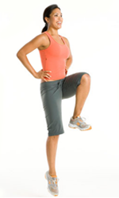

ေလ့က်င့္ခန္း ၁ (အေျခခံ)

ေျခကို အနည္းငယ္ခြဲျပီ မတ္တပ္ရပ္ပါ။
ဒူးကို အနည္းငယ္ ေကြးထားပါ။
ခါးေထာက္ပါ။
ညာေျခကို ေရွ႕ထုတ္ျပီး ခုန္လုိက္စဥ္ ဘယ္ဒူးကို အေပၚေျမွာက္ပါ။
ေျခေထာက္ ၂ဘက္လံုး ျပိဳင္တူခ်ပါ။
ေျခေထာက္ တစ္ဘက္စီ အတြက္ ၁၆ ၾကိမ္ေလာက္ ျပဳလုပ္ပါ။